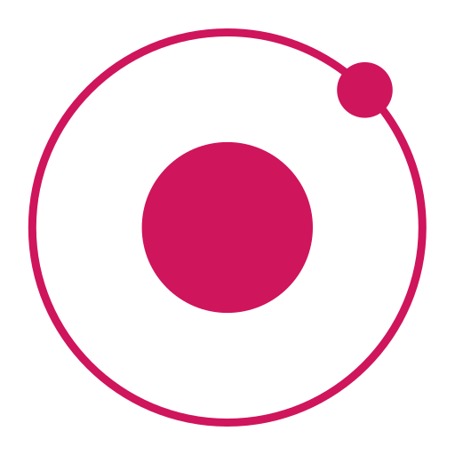

<!--
  Generated template for the RegistPage page.

  See http://ionicframework.com/docs/components/#navigation for more info on
  Ionic pages and navigation.
-->
<ion-header no-border>

    <ion-navbar color="ty-nav-bar">
  
        <ion-title>注册</ion-title>
        
      </ion-navbar>

</ion-header>
<ion-content no-padding>

    <div class="logo">
        
    </div>
<div class="iputcenter" >
    <ion-item  class="itemtop">
        <ion-icon name="contact" color="primary" item-left ios="ios-contact-outline" md="ios-contact-outline"></ion-icon>
        <ion-input  type="tel" maxlength="11" placeholder="请输手机号" [(ngModel)]="phoneNum" ></ion-input>
        <button ion-button   (click)="geSmsCodeClicked($event)" class="valcodebtn" item-end>{{valcodebtntext}}</button>
      </ion-item>
    
      <ion-item>
        <ion-icon name="contact" color="primary" item-left ios="ios-phone-portrait-outline" md="ios-phone-portrait-outline"></ion-icon>
        <ion-input type="number" placeholder="请输入验证码" maxlength="6" [(ngModel)]="smsCode"></ion-input>
      </ion-item>
      <ion-item>
          <ion-icon name="unlock" color="primary" item-left ios="ios-unlock-outline" md="ios-unlock-outline"></ion-icon>
        <ion-input type="password" placeholder="请输入新密码" minlength="6" maxlength="20" [(ngModel)]="password"></ion-input>
      </ion-item>
      <ion-item>
          <ion-icon name="lock" color="primary" item-left ios="ios-lock-outline" md="ios-lock-outline"></ion-icon>
        <ion-input type="password" placeholder="请确认新密码" maxlength="20" [(ngModel)]="confirmPassword"></ion-input>
      </ion-item>
      <div style="margin:20px" >
        <button ion-button block color="primary" (click)="register(phoneNum,smsCode,password,confirmPassword)">
          确定
        </button>
      </div>
      <p item-end class="login" (click)="loginBtnCliked()">已有账号，去登陆</p>
</div>
    
</ion-content>
